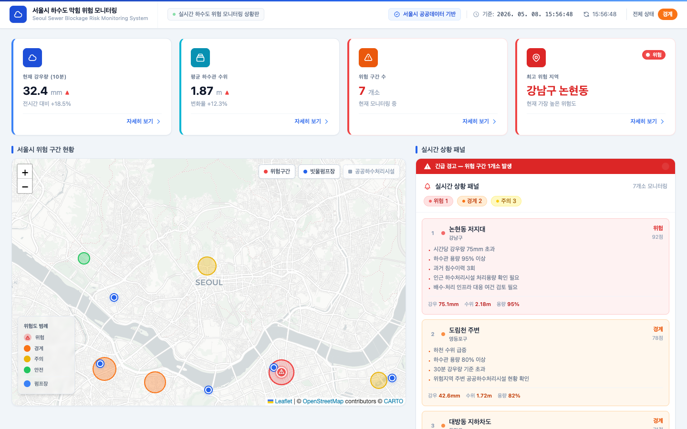
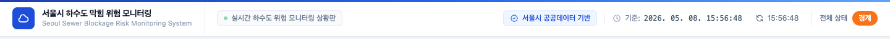
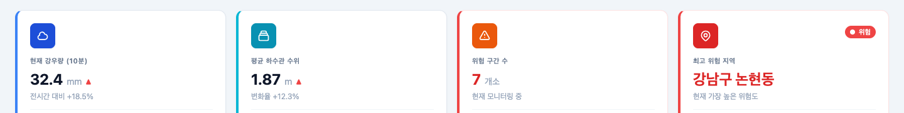
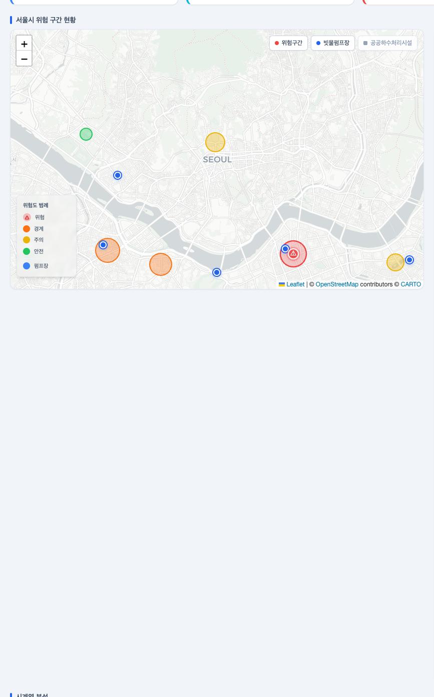
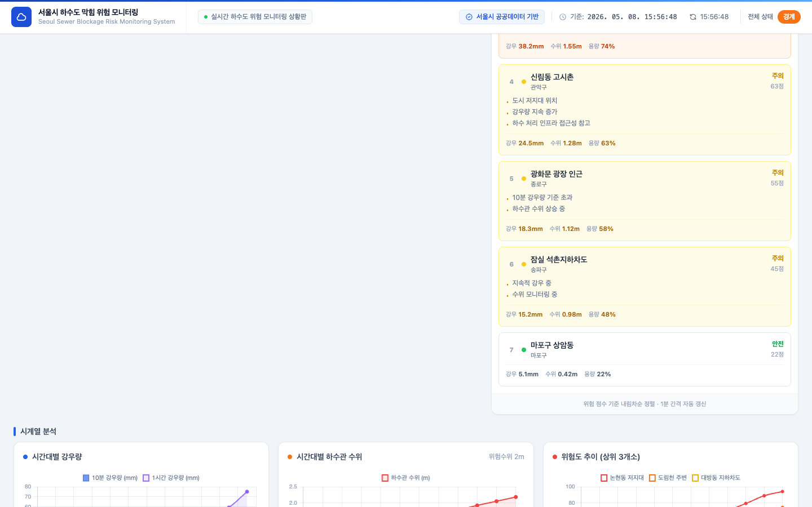
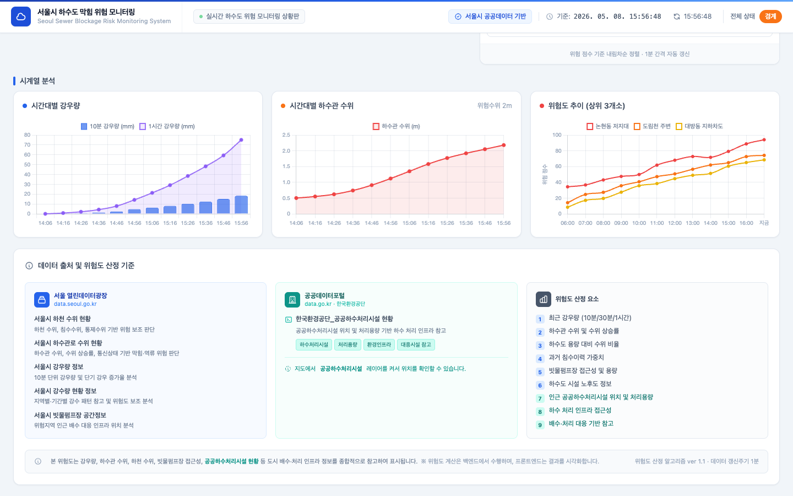

Seoul Sewer Blockage Risk Monitoring System
각 화면의 기능과 구성 요소를 기획팀 전달용으로 정리한 문서입니다.
대시보드는 5개 영역으로 구성됩니다 — 헤더 / KPI 카드 / 지도+상황패널 / 시계열 차트 / 데이터 출처

서비스 이름, 실시간 상태, 데이터 기준 시각, 전체 위험 등급을 표시합니다. 화면 스크롤 시에도 항상 상단에 고정됩니다.
현재 강우량, 평균 하수관 수위, 위험 구간 수, 최고 위험 지역을 한눈에 파악합니다. 카드 클릭 시 상세 페이지로 이동합니다.
Leaflet 기반 지도에 위험 구간, 빗물펌프장, 공공하수처리시설을 레이어별로 표시합니다. 마커 클릭/오버 시 상세 정보가 나타납니다.
현재 위험도 순으로 구간 목록을 나열합니다. DANGER 발생 시 상단에 긴급 경고 배너가 표시되며 1분마다 자동 갱신됩니다.
강우량 추이, 하수관 수위 변화, 위험도 상위 3개소의 시간별 점수 변화를 차트로 보여줍니다.
사용 데이터 출처(서울 열린데이터광장, 공공데이터포털)와 위험 점수 산정에 사용되는 9가지 요소를 안내합니다.
화면 최상단에 항상 고정되며, 시스템 식별 정보·실시간 상태·전체 위험 등급을 표시합니다.

가장 중요한 4가지 수치를 카드 형태로 표시합니다. 각 카드 클릭 시 해당 항목의 상세 페이지로 이동합니다.

Leaflet 기반 인터랙티브 지도로, 위험 구간·빗물펌프장·공공하수처리시설을 레이어별로 표시합니다.

위험 점수 순으로 정렬된 구간 목록을 실시간으로 표시하며, DANGER 발생 시 긴급 배너가 나타납니다.

강우량·하수관 수위·위험도를 시간 흐름에 따라 시각화하여 추세를 파악합니다.

대시보드 최하단에 위치하며, 데이터 출처와 위험 점수 산정 방법을 투명하게 안내합니다.
KPI 카드를 클릭하면 해당 항목의 상세 분석 페이지로 이동합니다.
KPI 카드 ①"현재 강우량" 클릭 시 이동.
시간대별 강우량 상세 차트, 측정소별 데이터 등 강우량 심층 분석 제공.
KPI 카드 ②"평균 하수관 수위" 클릭 시 이동.
센서별 수위 현황 Top 10, 위험 수위 초과 센서 목록, 상세 차트 제공.
KPI 카드 ③"위험 구간 수" 클릭 시 이동.
모니터링 중인 전체 구간의 위험도 테이블, 정렬·필터 기능 제공.
KPI 카드 ④"최고 위험 지역" 클릭 시 이동.
해당 지역의 상세 지도, 위험 원인 분석, 주변 인프라 현황 제공.